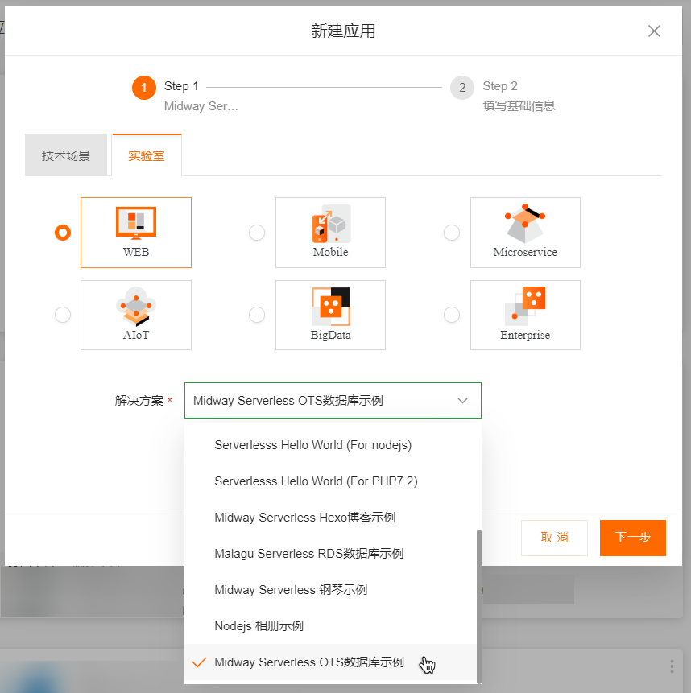
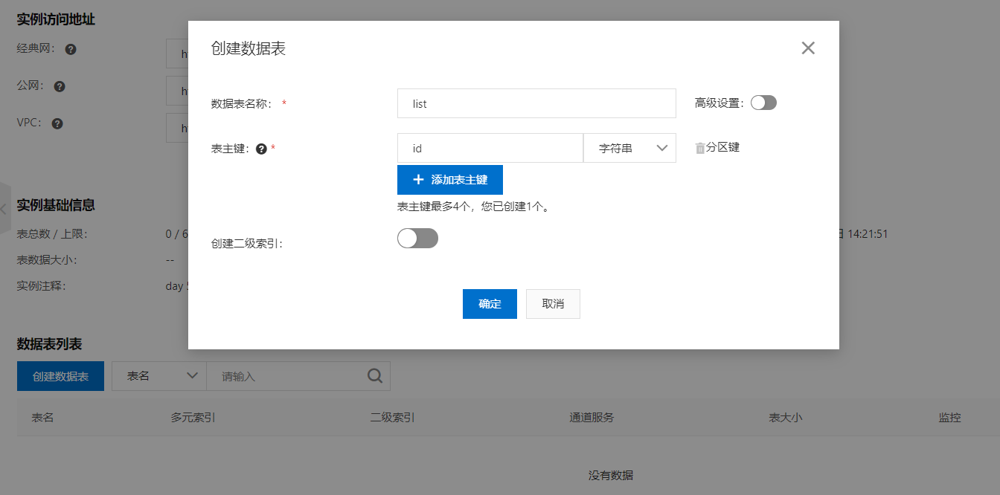
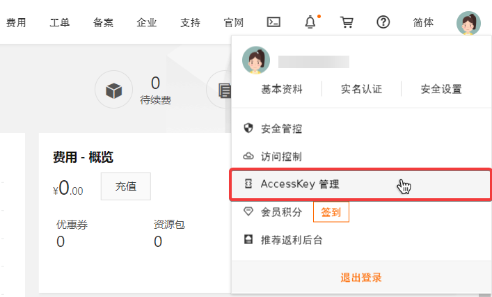
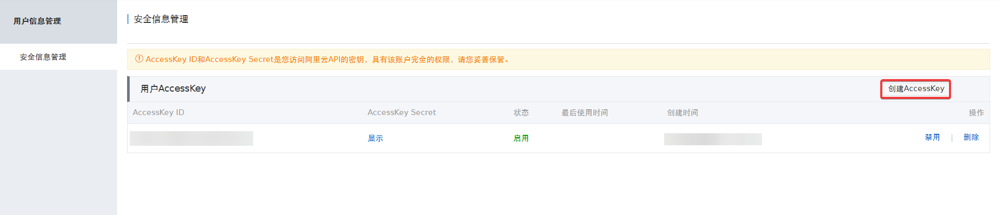
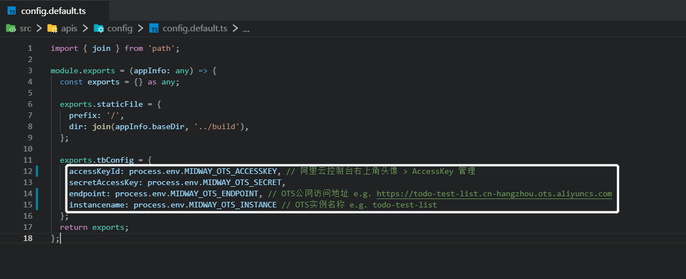
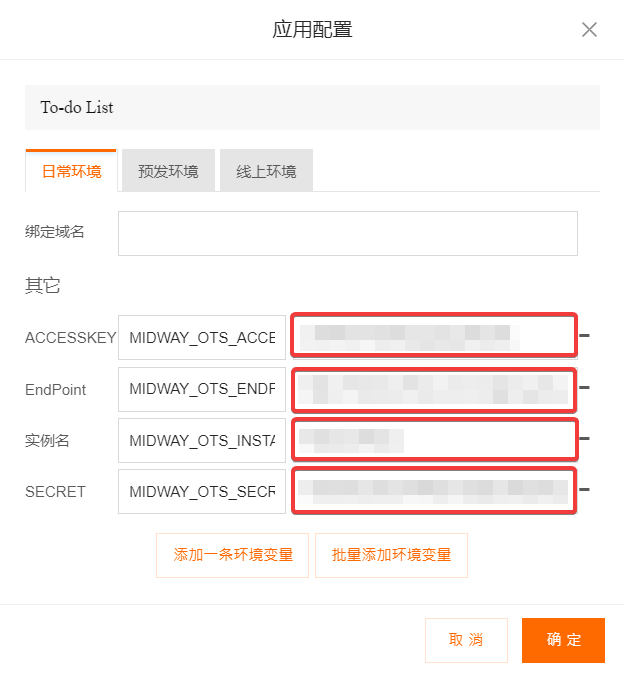
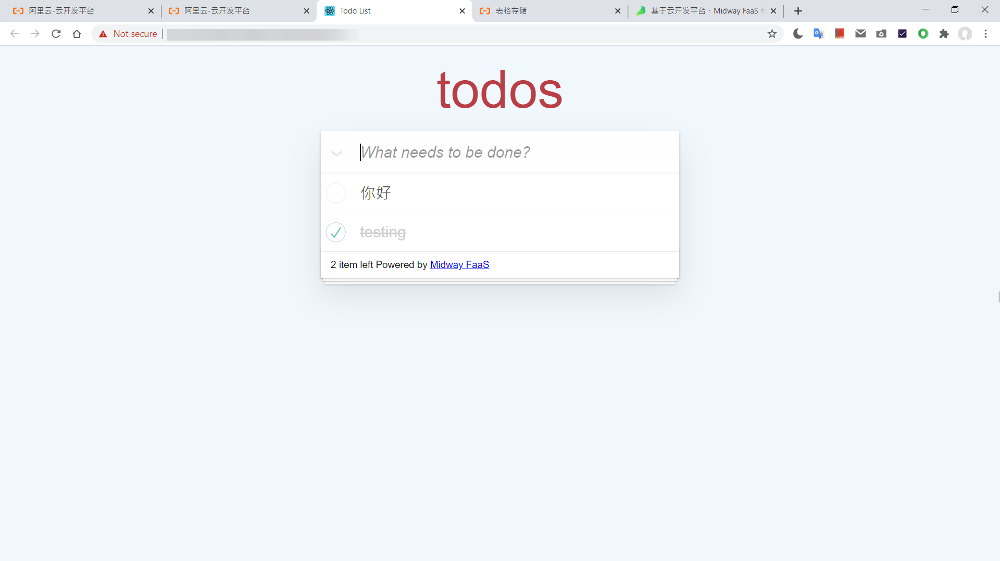
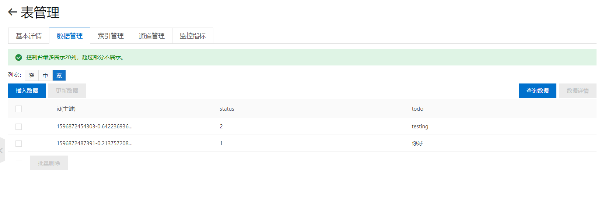

数据库与To-do List应用
新建一个实验室 Midway Serverless OTS数据库示例 应用

安装依赖后运行
npm i |
没有使用过表格存储(tablestore)的话需要先开通OTS服务并创建实例，然后进入实例管理。
创建一张名叫list的列表，主键为id

在控制台右上方头像处，选择AccessKey管理

创建你的AccessKeyId和AccessKeySecret

在src/apis/config/config.default.ts文件中，我们可以看到应用需要accessKeyId、secretAccessKey、endpoint、instancename四个变量

在云开发平台的应用配置中，在环境变量处填入刚刚获得的变量即可。（endpoint为实例的公网访问地址）

打开网页，to-do list就可以进行添加、完成、删除的操作

数据也及时更新到了OTS实例的list列表中
